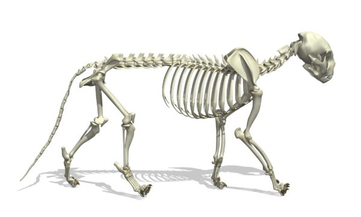

O esqueleto dos gatos possui cerca de 244 ossos e é divido em esqueleto axial e apendicular. O primeiro contém o crânio, mandíbula, esterno, 13 costelas e a coluna vertebral, constituídas de 7 vértebras cervicais, 13 torácicas, 7 lombares, 3 sacrais e 20 a 24 caudais. O esqueleto apendicular contém, em cada membro torácico escápula, úmero, rádio, ulna, 8 ossos carpais, 5 metacarpais e 3 falanges em cada dedo. Por sua vez, o osso pélvico sustenta os membros pelvinos, nos quais estão presentes fêmur, patela, tíbia, perônio, fíbula, 7 ossos tarsais, 4 metatarsais e as falanges. Uma particularidade desses animais é que eles não possuem o dedo polegar dos pés ou são rudimentares. 